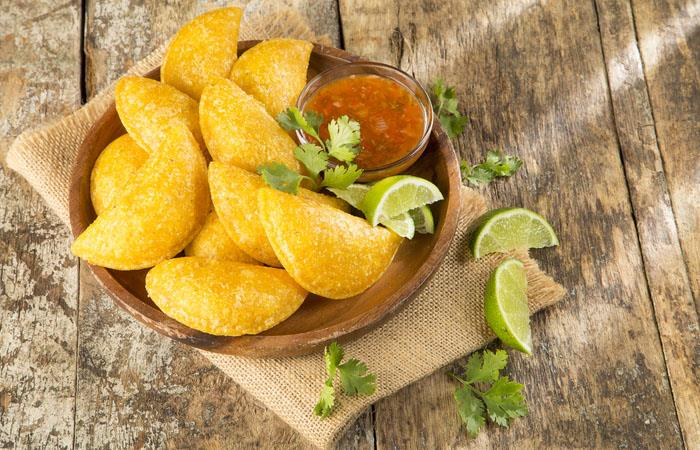

Empanadas de Pipian
24/03/2019, Popayán 
Remoja el maíz en agua durante cinco días, cambiando el agua a diario y revolviendo con un cucharón. Luego retira el agua y muele, deje decantar y retira el agua de la superficie (reserve esta agua).
Coloca la masa a cocinar en un caldero con sus paredes previamente untadas con aceite, mezclando continuamente. Al cabo de unas 2 horas, retira, deje enfria y amasa utilizando el agua reservada para suavizarla. Deja reposar por dos horas tapando con un paño húmedo o con hojas de plátano.
Para el relleno de pipián, en una olla grande con el aceite vegetal sofríe la cebolla, el ajo y el achiote. Luego añade la papa, vierta agua o caldo de pollo hasta apenas cubrir, agrega las hierbas y las especias, y cocina hasta que las papas se deshagan. Agrega el maní, cocina unos minutos más y deja enfriar.
Haz bolitas pequeñas con la masa, extiende sobre un plástico, acomoda una cucharadita de relleno y sella muy bien. Fríe con cuidado en aceite hondo hasta dorar y acompaña con ají de maní.